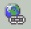

1 Membangun link antar halaman
Akhirnya kita tiba pada bagian hyperlink. Anda telah menguasai pembuatan situs
web, dan pembuatan halaman-halaman web, dan sekarang adalah saatnya untuk
menghubungkan halaman-halaman tersebut.
Sebelum membuat link, Anda harus memiliki minilam dua halaman (*.htm atau
*.asp). Jika belum ada, marilah kita membuat halaman baru.
1.1 Membuat halaman baru
Seperti telah dibahas pada bab 2, bahwa proses membuat halaman baru pada
prinsipnya mirip dengan pembuatan dokumen pada Microsoft Word.
1. Kali ini gunakan saja Page Template, aktifkan File ® New Page or site. Lalu
pada task pane klik ganda Pages templates. Muncul kotak dialog Pages
Templates, pilih icon template halaman, misal Narrow,Right-aligned Body.
Gambar 12.1 Icon template Narrow,Right-aligned Body
2. Klik OK, hasilnya seperti berikut:
Gambar 12.2 Hasil template Narrow,Right-aligned Body
3. Kemudian editlah teks yang ada di sebelah kanan, misalnya menjadi seperti
berikut:
Kekuatan …
Kekuatan adalah kemampuan seseorang untuk tetap bertahan dan berusaha terus dalam keadaan
tertentu yang menyakitkan.
Hadiah bagi yang berkekuatan besar adalah prestasi, kepandaian, kemuliaan, pujian, kuasa dan
sebagainya ….
4. Hasil pengeditan tampak seperti Gambar 12.3.
Gambar 12.3 Hasil pengeditan
5. Kemudian simpanlah halaman, misalnya sebagai kekuatan.htm. Caranya, dari
menu File klik Save, tampil kotak dialog Save As seperti Gambar 12.4. Lalu
tuliskan kekuatan.htm dan klik OK. Tampil kotak dialog konfirmasi
pemasangan gambar.
6. Klik OK.
1.2 Membuat link
Ada dua cara untuk membuat link ke halaman-halaman lain di dalam web Anda.
Anda dapat membuat link ke halaman yang sudah ada, atau membuat link ke
halaman baru pada saat bersamaan. Kita akan mulai dengan cara yang pertama.
Andaikan Anda sudah memiliki beberapa halaman, dan ingin saling
menghubungkannya. Misalnya, Anda ingin menghubungkan halaman utama
(index.htm atau default.htm), ke halaman lain. Beginilah caranya:
1. Pilih teks untuk menempatkan link, yaitu teks yang dapat diklik pemakai untuk
mengaktifkan link tersebut.
Gambar 12.4 Kata Kekuatan terpilih
2. Klik tombol Insert Hyperlink ( ), atau pilih Insert _Hyperlink. Kotak
dialog Insert Hyperlink tampil, seperti Gambar 12.5.
Gambar 12.5 Menghubungkan ke halaman yang kita inginkan
3. Untuk menghubungkan ke salah satu halaman yang terbuka, klik halaman yang
Anda inginkan, misalnya Kekuatan.htm lalu klik OK. Perhatikan hasilnya. Kata
“Kekuatan” tersebut kini berubah warna dan memiliki garis bawah.
Gambar 12.6 Hasil link halaman
Untuk mencoba hasilnya, klik tab Preview lalu klik kata Kekuatan, maka halaman
Kekuata.htm akan ditampilkan. Lihat Gambar 12.7.
Gambar 12.7 Halaman asal dan halaman tujuan link
Metode kedua adalah membuat halaman baru pada saat membuat link. Beginilah
caranya:
1. Pilihlah teks yang ingin Anda jadikan link, misalnya kata “Doa” , Gambar 12.8.
Gambar 12.8 Kata Doa terpilih sebagai kata link
2. Klik tombol Insert Hyperlink atau klik perintah Insert _ Hypperlink. Kotak
dialog Insert Hyperlink terbuka.
Gambar 12.9 Icon Create New Document pada kotak dialog Insert Hyperlink
3. Klik icon Create New Document, Anda akan melihat informasi seperti pada
Gambar 12.10.
Gambar 12.10 Pengisian informasi baru
4. Pada kotak isian Name of new document tuliskan nama halaman baru,
misalnya Doa.
5. Klik OK. Hasilnya berupa halaman yang langsung dibuka dan siap diedit.
Gambar 12.11 Halaman baru siap diedit
6. Kemudian tuliskan teks, misalnya seperti berikut ini:
DOA
Untuk tetap hidup, manusia perlu makan. Tubuh kita perlu gizi, jiwa kita perlu motivasi dan
roh kita mutlak perlu doa.
Doa adalah nafas iman, yang menjaga manusia dari terkaman dosa dan kebinasaan abadi
7. Lalu formatlah teks untuk mempercantik halaman, kalau perlu sisipkan gambar,
sisipkan WordArt dan terapkan theme. Contoh hasilnya seperti Gambar 12.12.

Gambar 12.12 Hasil pengeditan
8. Kemudian simpanlah halaman, dari menu File klik Save. Tampil kotak dialog
Save As. Isikan nama yang Anda inginkan pada kotak isian Address, misalnya
doa.htm.
9. Kemudian cobalah hasilnya pada tab Preview atau View _ Preview in
Browser, bila komputer Anda terhubung ke web server.
Link akan diwarnai dan digarisbawahi, dan ketika pada tampilan browser Anda
menunjuk link itu maka pointer mouse akan berubah menjadi sebuah icon tangan
kecil.
Anda dapat mengubah warna link tersebut dengan menggunakan kotak dialog Page
Properties.
1.3 Memodifikasi link
Anda bisa memodifikasi sebuah link, caranya:
1. Klik ganda teks yang menjadi link, kata terpilih.
2. Klik kanan kata tersebut lalu klik perintah Hyperlink Properties. Tampil kotak
dialog Edit Hyperlink.
Gambar 12.13 Kotak dialog Edit Hyperlink
3. Unttuk mengganti halaman yang dikait, klik nama halaman baru yang Anda
inginkan, atau langsung tuliskan pada kotak Address.
4. Untuk menghapus link, hapuslah nama halaman yang ada pada kotak isian
Address.
5. Klik OK.
Anda akan melihat bahwa teks tersebut telah berubah kembali menjadi normal, yaitu
tidak lagi berwarna lain dan tidak digarisbawahi.
Copyright © Herlan Lesmana
Created with the Freeware Edition of HelpNDoc: Easy to use tool to create HTML Help files and Help web sites